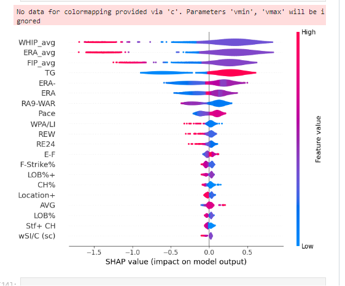
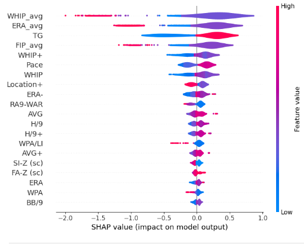
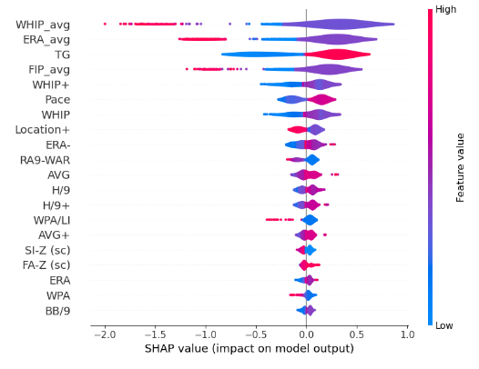

Curveballs and Calculations:
Predicting ERA, FIP, and WHIP After Recent Rule Changes
Data Cleaning and Manipulation
In the initial stages of our project, we prioritized thorough data cleaning and manipulation. To ensure the most accurate insights, we took several steps to refine our dataset. This involved filtering out rows corresponding to the 2020 season due to its pandemic-induced brevity.
Null values within the DataFrame were replaced with zeros to maintain data integrity. Additionally, we identified and dropped columns containing redundant statistics, further streamlining our dataset. To focus on relevant seasons, we applied filters for the years 2018, 2019, 2021, and 2022. For the pivotal year 2023, we organized the data by player ID, enabling comprehensive analysis.
Calculating average statistics for essential metrics like ERA, FIP, and WHIP allowed us to distill valuable trends. Subsequently, these average stats were seamlessly integrated with the 2023 player statistics, providing a holistic overview.
To enhance the interpretability of our results, we merged the pitchers' names with the resulting DataFrame, facilitating clearer association with their performance metrics.
Z-Score Calculation and Differences
Continuing our analysis journey, we transitioned into the critical phase of z-score calculation and subsequent evaluation of differences. This comprehensive process encompassed:
- Calculating z-scores for ERA, FIP, and WHIP, both for the average values and the values for the year 2023.
- Thoroughly computing the differences between these z-scores, revealing nuanced insights into performance dynamics.
- Integrating the calculated z-scores and differences as new columns within the DataFrame, a pivotal augmentation to our dataset.
This cohesive endeavor enabled us to methodically gauge the significance of performance fluctuations across multiple dimensions. With these enriched datasets, we were poised to embark on more nuanced explorations.
Output and Saving Data
As we progressed through our analysis, the final stages involved outputting and preserving valuable insights. Our script was designed to:
- Output the meticulously merged DataFrame, now enriched with z-scores and differences, providing a comprehensive view of our findings.
- Display intermediate values, standard deviations, and selected specific columns, contributing to a clearer understanding of our analytical process.
This stage ensured that our efforts translated into tangible, accessible results, ready for further examination and interpretation.
Creating Learning Datasets
With our data refined and augmented, we shifted focus towards preparing learning datasets for deeper exploration. This step involved:
- Creating distinct datasets tailored for learning ERA, FIP, and WHIP, effectively isolating each performance metric.
- Strategically dropping specific columns from each dataset to streamline and optimize the learning process.
- Saving these modified and focused datasets as separate CSV files, preserving them for future analyses and machine learning endeavors.
This careful preparation laid the foundation for uncovering intricate patterns and insights within each performance dimension.
Analysis and ML
Classification Results
We utilized logistic regression and XGBoost to train, evaluate, and visualize the results of classification models aimed at predicting performance metrics (ERA, FIP, WHIP) for pitchers.
Data Preprocessing
- Imported necessary libraries and read data from CSV files into separate DataFrames for ERA, FIP, and WHIP.
- Imputed missing values in these DataFrames using the median strategy.
Logistic Regression Model for ERA, FIP, and WHIP
- Implemented the train_and_evaluate_logistic_regression function for logistic regression models targeting (ERA, FIP, WHIP).
- Transformed target columns into binary classes (0 or 1) based on whether the value is greater than 0.
- Split data into training and testing sets, applying SMOTE for oversampling to address class imbalances.
- Standardized features using StandardScaler, trained logistic regression models, made predictions, and calculated accuracy.
- Utilized SHAP explainer to analyze feature importance.
Classification Model with XGBoost for ERA, FIP, and WHIP
- Evaluated the train_and_evaluate_classification_model function using XGBoost classifiers for specific target columns.
- Dropped missing columns and transformed the target column similar to the logistic regression case.
- Split, scaled data, and created a pipeline with SMOTE and XGBoost.
- Computed cross-validation scores, trained the pipeline, made predictions, and computed SHAP values for feature importance.
XGBoost Classifier and Creating a Prediction DataFrame
def create_predictions_dataframe(result_df, name_df):
y_pred_train = result_df['y_train']
y_pred_test = result_df['y_pred']
y_train = result_df['y_train']
y_test = result_df['y_test']
indexes_train = result_df['X_train'].index
indexes_test = result_df['X_test'].index
names_train = name_df.loc[indexes_train, 'Name']
predictions_with_names_train = list(zip(names_train, y_pred_train, y_train))
names_test = name_df.loc[indexes_test, 'Name']
predictions_with_names_test = list(zip(names_test, y_pred_test, y_test))
predictions_df_train = pd.DataFrame(predictions_with_names_train, columns=['Name', 'Prediction', 'Actual'])
predictions_df_test = pd.DataFrame(predictions_with_names_test, columns=['Name', 'Prediction', 'Actual'])
# Add a column for correctness
predictions_df_train['Correctness'] = np.where(predictions_df_train['Prediction'] == predictions_df_train['Actual'], 'Correct :)', 'Wrong :(')
predictions_df_test['Correctness'] = np.where(predictions_df_test['Prediction'] == predictions_df_test['Actual'], 'Correct :)', 'Wrong :(')
pred_actual_df = pd.concat([predictions_df_train, predictions_df_test], ignore_index=True)
return pred_actual_df
result_era = train_and_evaluate_classification_model(pitcher_era_df, 'z_score_diff_era')
# Print the results
print(f"Cross Value Scores: {result_era ['cross_val_scores']}")
print(f"Accuracy: {result_era ['accuracy']:.2f}")
print(f"Recall: {result_era ['balanced_recall']:.2f}")
Cross Value Scores: [0.94814815 0.93333333 0.94814815 0.95522388 0.99253731]
Accuracy: 0.93
Recall: 0.93
Overall, the code performed classification tasks using logistic regression and XGBoost to predict the performance metrics of pitchers.
It emphasizes accuracy, cross-validation scores, and SHAP values for feature importance analysis. The final DataFrame `pitching_verdict_df` summarizes the correctness of predictions for each performance metric and pitcher. The results can be used to assess the models' performance and provide insights into which features are most influential in making accurate predictions.
Results and Conclusion
To learn more about the results, let's examine the the SHAP plots to determine feature importance.
SHAP Violin Plot for ERA

#ERA Classification scores:
Cross Value Scores: [0.94814815 0.93333333 0.94814815 0.95522388 0.99253731]
Accuracy: 0.93
Recall: 0.93
In the ERA (Earned Run Average) prediction model, we a 5-fold cross-validation, with each of the trained subsets returning accuracy scores over 93%. The test data, or ratio of correct predictions to the total number of predictions made by the model was 93%. And finally, the true positive rate or sensitivity was 93%.
Feature impact on ERA prediction (SHAP graph): The model suggests that higher values of WHIP_avg, ERA_avg, and FIP_avg are strong contributors to higher predicted ERAs. And obviously, TG (Total Games) will account for higher predicted ERA's with higher game appearances.
SHAP Violin Plot for FIP

#FIP training and evaluation results
Cross Value Scores: [0.93333333 0.94074074 0.96296296 0.95522388 0.97761194]
Accuracy: 0.95
Recall: 0.95
As we see above, the FIP (Fielding Independent Pitching) training model scored high. Unlike the old tried and true ERA stat, FIP considers only the factors that a pitcher can control (strikeouts, walks, home runs, etc…) with a pretty high degree of accuracy and recall.
One very interesting result in the SHAP for FIP, was that Pace moved up two spots in feature importance. Pace is a measure of the seconds between pitches for both hitters and pitchers based on PITCHf/x timestamps. However, as far as importance, most followers of Sabremetrics find Pace to have little impact on pitching performance, but the model seems to think it's more important than we think.
SHAP Violin Plot for WHIP

#WHIP training and evaluation scores:
Cross Value Scores: [0.92592593 0.95555556 0.96296296 0.94029851 0.97761194]
Accuracy: 0.92
Recall: 0.89
WHIP-(Walks and Hits per Inning Pitched) We continue to see that the 5-fold validation is returning some very good results. The held-out test data was above 90%, and good recall at 89%.
The SHAP graph for our WHIP prediction shows that the top features impacting our models appear to be pretty consistent for each targets.
Please click on the baseballs below to explore my dashboard (powered by Flask), and don't miss the opportunity to explore my partner's projects as well.

After extensive analysis and machine learning, we reached some compelling conclusions:
The best model achieved an impressive 95% accuracy in predicting FIP, closely followed by ERA at 93% and WHIP at 92% accuracy. These results signify the predictive power of our models and their ability to anticipate pitching performance metrics.
Overall, the models seemed to work very well. As you'll see in the MLB Starting Pitcher Dashboard, the model predicted very closely to this year's stats even though we're not yet in the post season, with plenty of baseball still left to be analyzed. But I'd rather just watch the game.
GitHub Project Repository